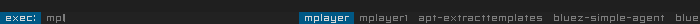
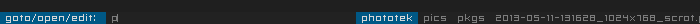

<!DOCTYPE html PUBLIC "-//W3C//DTD XHTML 1.0 Strict//EN" "http://www.w3.org/TR/xhtml1/DTD/xhtml1-strict.dtd">
<html xmlns="http://www.w3.org/1999/xhtml" xml:lang="en" lang="en">

<head>
    <meta http-equiv="Content-Type" content="text/html;charset=utf-8" />
    <link rel="stylesheet" href="../../style.css" type="text/css" />
    <link rel="Shortcut Icon" href="../../favicon.ico" type="image/x-icon" />
<!-- Page Title -->
    <title>Centre d'Aide Livarp - dmenu</title>
</head>
<!-- Page Content -->
<body>
    <div id="container">
        <div id="header">
            <h2>lang fr|<a href="../../us/tips/dmenu.html">gb</a></h2><h1><a href="../../index-fr.html" title="retour au menu"></a></h1>
        </div>
        <div id="links">
            <div class="categorie">
            <h1>utiliser dmenu</h1>
            <p>dmenu est un menu dynamique pour X entièrement controlé depuis le clavier. il est disponible pour toutes les distributions GNU/Linux. dmenu est ultra-léger, rapide, et est développé par suckless.org comme dwm.<br />
            chez Debian, il fait parti du paquet suckless-tools.</p>
            <p>dmenu se lance simplement grâce à la commande dmenu_run et liste les applications et scripts inclus dans $PATH. voici son affichage par défaut:<br />
            <b>note:</b> une fois dmenu lancé, le clavier est gelé pour les autres applications: pour annuler dmenu, presser ESC.</p>
            
            <h2>les scripts intégrés au livarp:</h2>
            <p>livarp intègre dmenu et quelques scripts utiles situé dans votre dossier /usr/local/bin/:</p>
            <h3>dmenu-bind.sh</h3>
            <p>c'est le sript d'utilisation classique de dmenu, celui qui vous permet de lancer simplement vos applications</p>
            <p class="blockquote">#!/bin/bash<br />
            exe=`dmenu_path | dmenu -b -fn "snap" -nb '#222222' -nf '#7D7D7D' -sb '#005885' -sf '#BFBFBF' -p 'exec:'` && eval "exec $exe"</p>
            
            <p>utilisation: lancer dmenu-bind.sh depuis un rassourcis clavier (selon votre session) puis commencer à taper le nom d'une application; la liste se met à jour au fur et à mesure, vous pouvez lors, taper le nom en entier ou circuler entre les propositions de dmenu avec les flèches de votre clavier. presser Enter pour lancer l'application sélectionnée.</p>
            <h3>dmenu-home.sh</h3>
            <p>ce script vous permet de lister (avec la commande ls) votre dossier utilisateur et d'ouvrir ou afficher le fichier/dossier sélectionné avec rox-filer.</p>
            <p class="blockquote">#!/bin/bash<br />
            loc=`ls -A $HOME | dmenu -b -fn "snap" -nb '#222222' -nf '#7D7D7D' -sb '#005885' -sf '#D7D7D7' -p 'goto/open/edit: '` && eval "rox $loc"</p>
            
            <p>utilisation: lancer dmenu-home.sh depuis un raccourcis clavier (selon votre session) puis commencer à taper le nom d'un fichier ou dossier, il ne vous reste plus qu'à choisir dans les propositions de dmenu. presser Enter pour ouvrir/éditer/afficher le fichier/dossier sélectionné.</p>
            <h3>dmenu-quit.sh</h3>
            <p>ce script est une alternative à shutdown.sh et permet de lancer des actions sur votre machine</p>
            <p class="blockquote">#!/bin/bash<br />
            # a simple logout dialog<br />
            choice=`echo -e "0: Cancel\n1: Logout\n2: Shutdown\n3: Reboot\n4: Lock" | dmenu -b -fn "snap" -nb "#222222" -nf "#7D7D7D" -sb "#7D7D7D" -sf "#222222" -p "select an action:" | cut -d ':' -f 1`<br />
            # execute the choice in background<br />
            case "$choice" in<br />
                0) exit ;;<br />
                1) xdotool key Ctrl+Alt+BackSpace &amp; ;;<br />
                2) sudo shutdown -h now &amp; ;;<br />
                3) sudo shutdown -r now &amp; ;;<br />
                4) xscreensaver-command -lock &amp; ;;<br />
            esac</p>
            
            <p>utilisation: lancer dmenu-quit.sh depuis un raccourcis clavier (selon votre session) puis taper un n° ou circuler entre les propositions de dmenu. presser Enter pour valider l'action sélectionnée.</p>
            <p>&nbsp;</p>
            <h2>autres scripts utiles</h2>
            <h3>dmenu-wall.sh</h3>
            <p>ce script liste les images situées dans 'WALLDIR' et affiche l'image sélectionnée en fond d'écran:</p>
            <p class="blockquote">#!/bin/bash<br />
            WALLDIR=$HOME/pics/walls<br />
            wall=`ls -A $WALLDIR | dmenu -b -fn "-*-fixed-*-*-*-*-10-70-*-*-*-*-*-*" -nb '#222222' -nf '#7D7D7D' -sb '#7D7D7D' -sf '#222222' -p 'set as wall:'` &amp;&amp; eval "feh --no-xinerama --bg-scale $WALLDIR/$wall"</p>
            <h3>dmenu-todo.sh</h3>
            <p>ce script sert de pense-bête: vous écrivez, il rajoute une tâche. vous sélectionnez, il efface la tâche:</p>
            <pre class="blockquote">
#!/bin/sh
## script pour gérer les différentes tâches à  faire avec dmenu.
## sources: <http://thuban.toile-libre.org/index.php/2011/01/22/un-pense-bete-avec-dmenu/>
# variables utilisées pour dmenu
SB="#7D7D7D"
SF="#222222"
NB="#222222"
NF="#7D7D7D"
FN="-*-fixed-*-*-*-*-10-70-*-*-*-*-*-*"
FILE=~/.todo
SCRIPT=~/bin/dmenu-todo.sh 
HEIGHT=$(cat $FILE | wc -l)
PROMPT="write:add | select:del > "
 
ACTION="cat $FILE | dmenu -fn $FN -l '$HEIGHT' -nb '$NB' -nf '$NF' -sb '$SB' -sf '$SF' -p '$PROMPT:' "
CMD=$(eval $ACTION)
while [ -n "$CMD" ]; do
	grep -q "^$CMD" $FILE
	if [ $? = 0 ]; then
		grep -v "^$CMD" $FILE > /tmp/todo
		mv /tmp/todo $FILE
	else
		echo "$CMD" >> $FILE
		exec $SCRIPT && exit 7
	fi
 
	CMD=$(eval $ACTION)
 
done
exit 0</pre>
            <h3>dmenu-launch.sh</h3>
            <p>ce sript lance vos scripts personnels contenus dans 'DIR':</p>
            <p class="blockquote">#!/bin/sh<br />
            # minimal launcher with dmenu<br />
            DIR=$HOME/bin/skin_switchers<br />
            skin=`ls -1 $DIR | dmenu -b -fn '-*-fixed-*-*-*-*-10-70-*-*-*-*-*-*' -nb '#222222' -nf '#7D7D7D' -sb '#7D7D7D' -sf '#222222' -i -p 'skins: '` &amp;&amp; eval "exec $DIR/$skin"</p>
            <p>&nbsp;</p>
            <h2>les options de dmenu:</h2>
            <pre class="blockquote">
option  argument    description
-b                  affiche dmenu en bas de l'écran.
-i                  dmenu prend la casse en compte.
-l      digit 	    dmenu affiche le menu verticalement avec le nombre de ligne passé en argument.
-p      texte 	    defini le texte à afficher à gauche de l'écran.
-fn     font 	    police utilisée.
-nb     #RRGGBB     couleur du fond.
-nf 	#RRGGBB     couleur du texte.
-sb 	#RRGGBB     couleur du fond sélectionné.
-sf 	#RRGGBB     couleur du texte sélectionné.
-v                  affiche la version de dmenu.
</pre>
            <p>&nbsp;</p>
            <p>liens: <a href="http://tools.suckless.org/dmenu/">la page officielle du site</a>, l'excellent <a href="http://thuban.toile-libre.org/index.php/category/suckless/dmenu/">blog de thuban</a>.</p>
            </div>
        </div>
    </div>
    <div id="footer">centre d'aide livarp_0.4 - <a href="http://arpinux.org">arpinux</a>@2013 - <a href="https://gitorious.org/livarp">sources</a></div>
</body>
</html>

<!-- cc BY-NC-SA License :: arpinux :: 2013 :: http://arpinux.org -->
